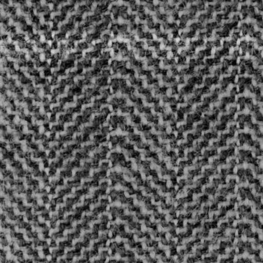
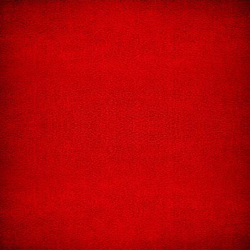
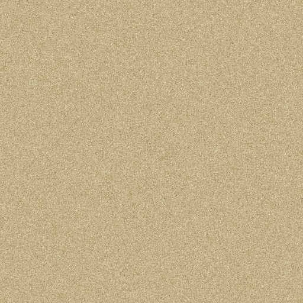
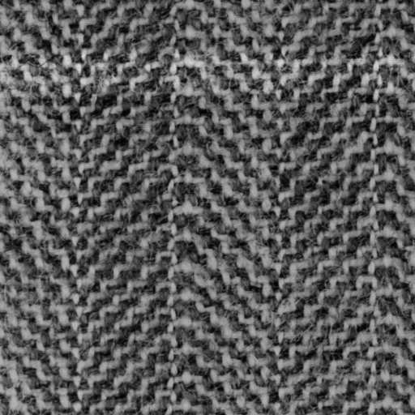
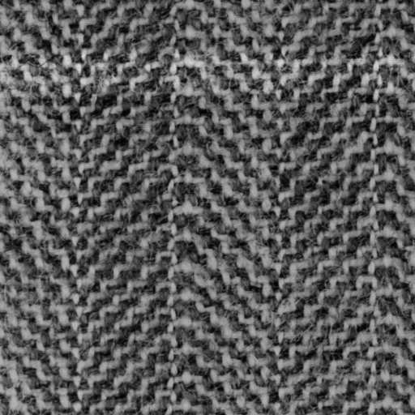
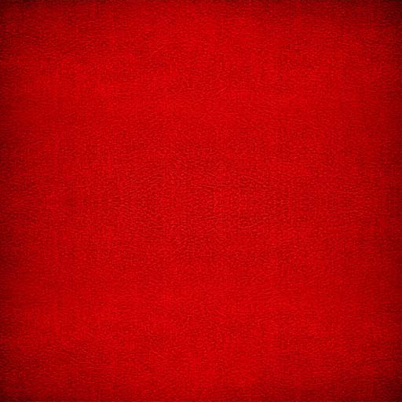
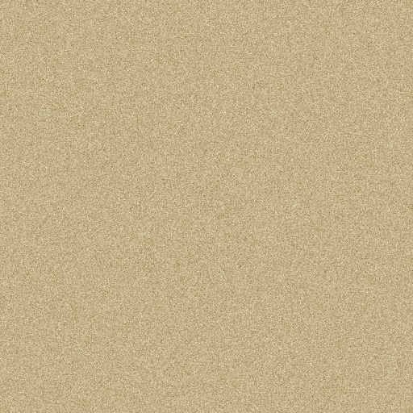
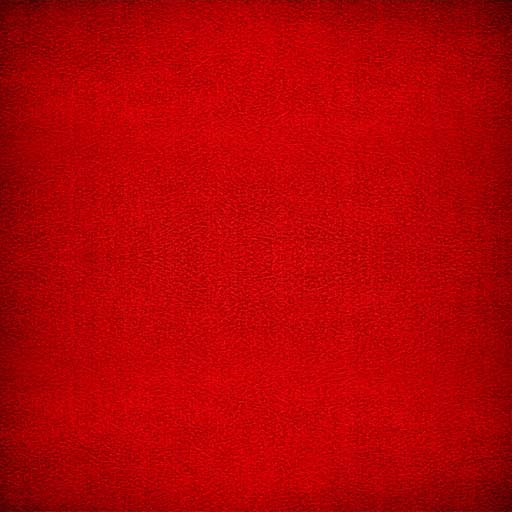
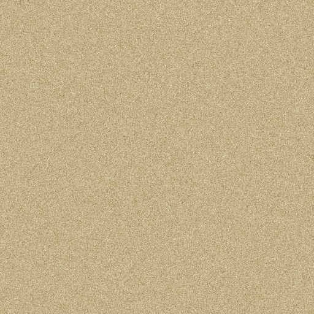

Oops ... your browser doesn't support the HTML5 canvas element
Toggle Texture
Toggle between texture and wireframe
Toggle Camera Mode
Toggle between Main Camera View and Robot Camera Perspective
Modifier for Hand
Palm Y Angle -180
180
Palm Z Angle -45
45
Lower Pinkie Angle 0
90
Upper Pinkie Angle 0
90
Lower Ring Angle 0
90
Upper Ring Angle 0
90
Lower Middle Angle 0
90
Upper Middle Angle 0
90
Lower Index Angle 0
90
Upper Index Angle 0
90
Lower Thumb Angle 0
90
Upper Thumb Angle 0
90
Toggle Animation
Modifier for Robot
Torso Y-Rotation -180
180
Head Y-Rotation -90
90
Head X-Rotation -90
90
Left Upper Arm X-Rotation -60
180
Left Lower Arm X-Rotation 0
160
Right Upper Arm X-Rotation -60
180
Right Lower Arm X-Rotation 0
160
Left Upper Leg X-Rotation -90
90
Left Lower Leg X-Rotation 0
150
Right Upper Leg X-Rotation -90
90
Right Lower Leg X-Rotation 0
150
Toggle Animation
Modifier for Dino
Torso Y-Rotation -180
180
Head Y-Rotation -60
60
Left Upper Leg Z-Rotation -60
60
Left Lower Leg Z-Rotation 0
60
Right Upper Leg Z-Rotation -60
60
Right Lower Leg Z-Rotation 0
60
Tail1 Y-Rotation -30
30
Tail2 Y-Rotation -20
20
Tail3 Y-Rotation -15
15
Toggle Animation
Modifier for Cube
Cube X Angle -180
180
Cube Y Angle -180
180
Cube Z Angle -180
180
Toggle Animation
Modifier for Pyramid
Pyramid X Angle -180
180
Pyramid Y Angle -180
180
Pyramid Z Angle -180
180
Toggle Animation

 


 

 


